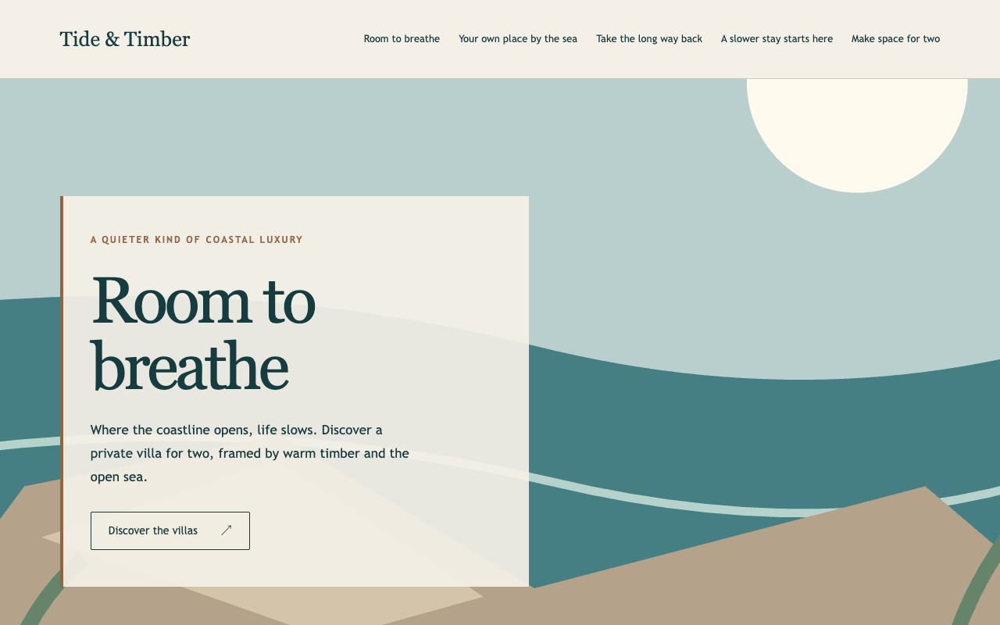
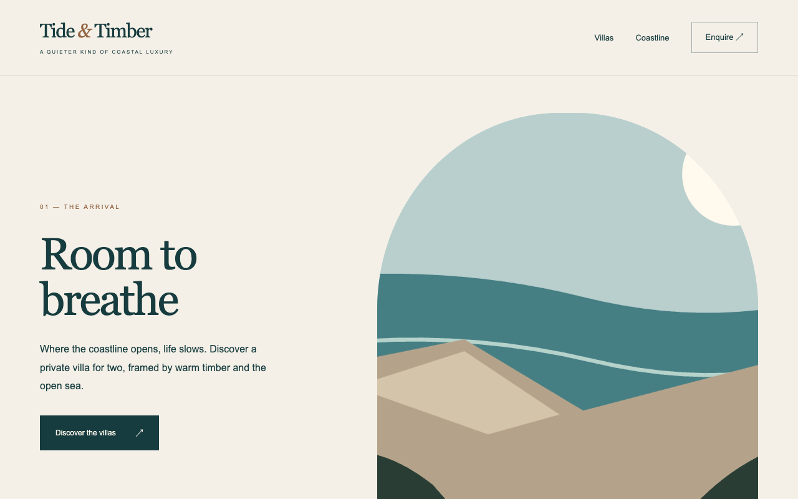
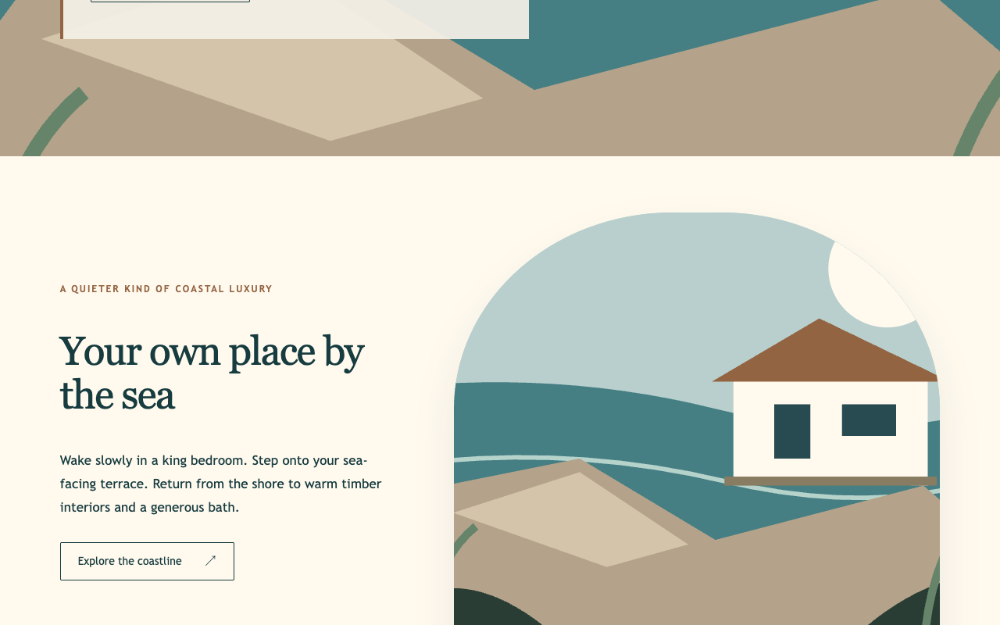
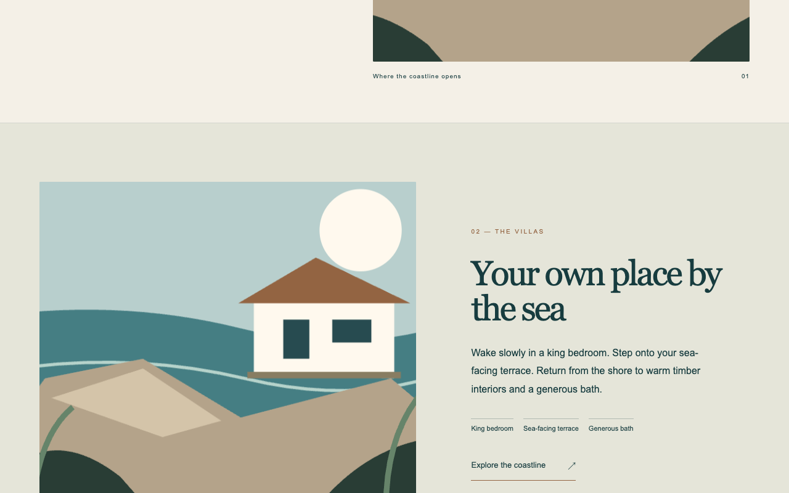
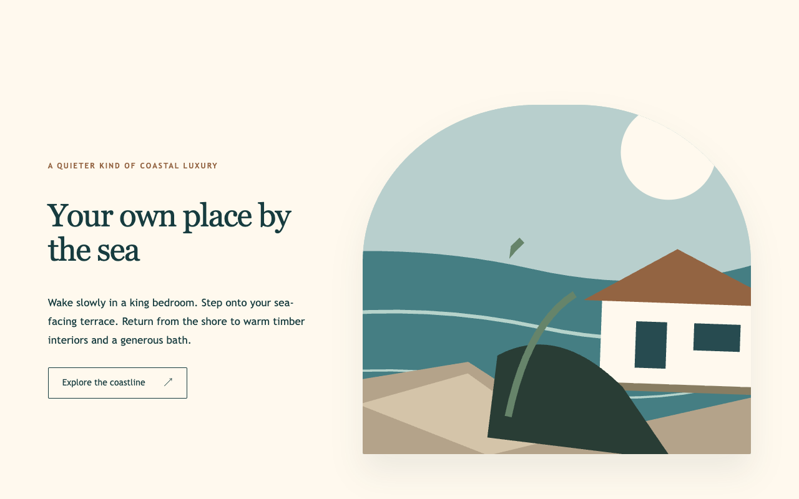
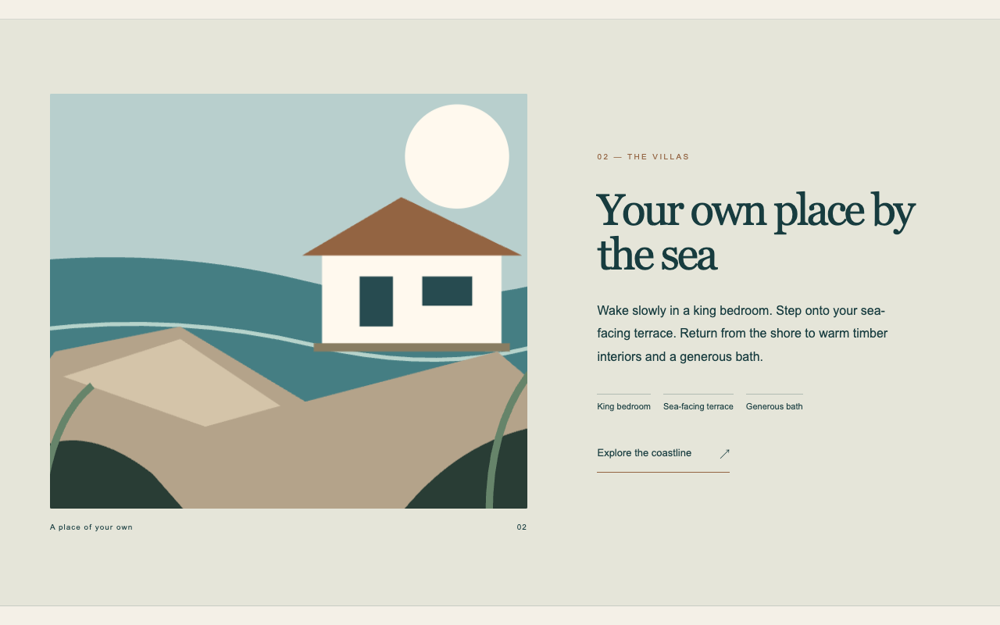
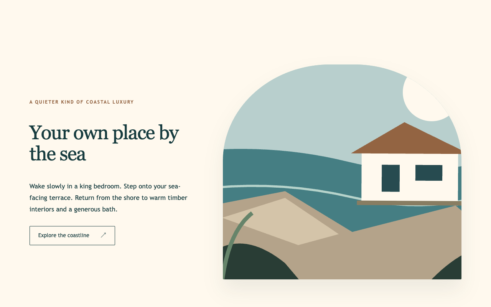
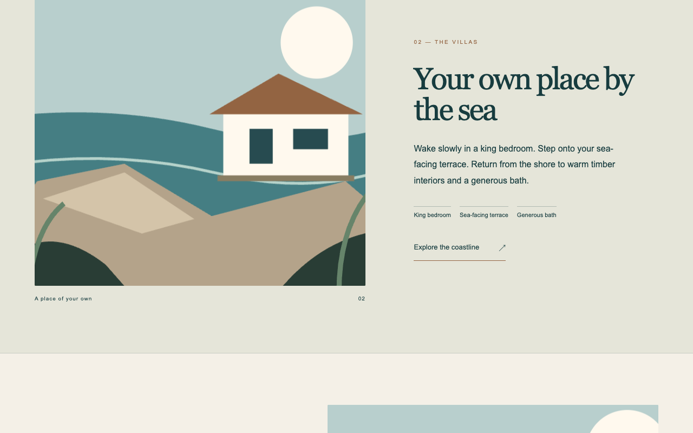
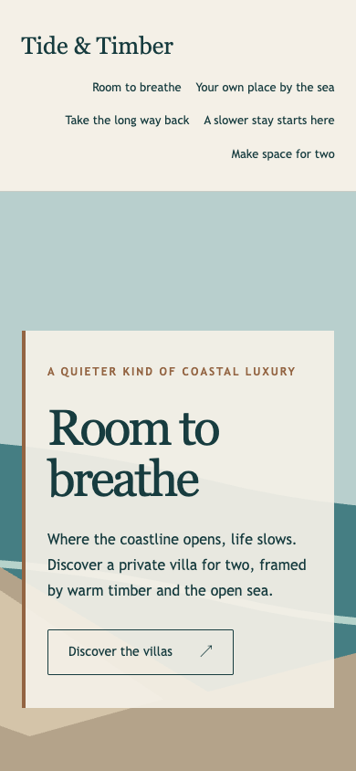
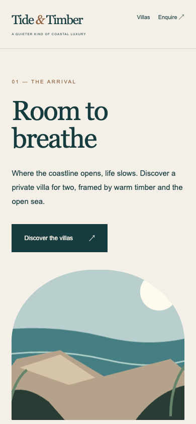

Tide & Timber: A / B review
Same agreed brief, visitor copy, palette and illustration assets. Same model and reasoning effort. Open each site to judge scrolling; screenshots alone cannot establish motion quality.
Compare visible depth, readable content, composition, usability and whether the motion supports the coastal story. Neither version is presumed better. These labels are neutral; this is not a fully blinded trial.
Desktop arrival
Option A
Option B
Villa beginning
Option A
Option B
Villa middle
Option A
Option B
Villa end
Option A
Option B
Mobile arrival
Option A
Option B
Desktop captures: 1280 × 800. Mobile: 390 × 844. Beginning/middle/end follow each site's own scene duration.